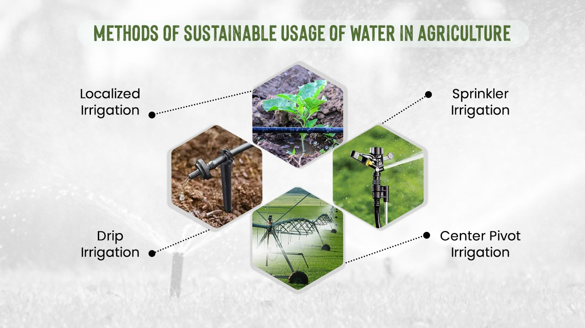
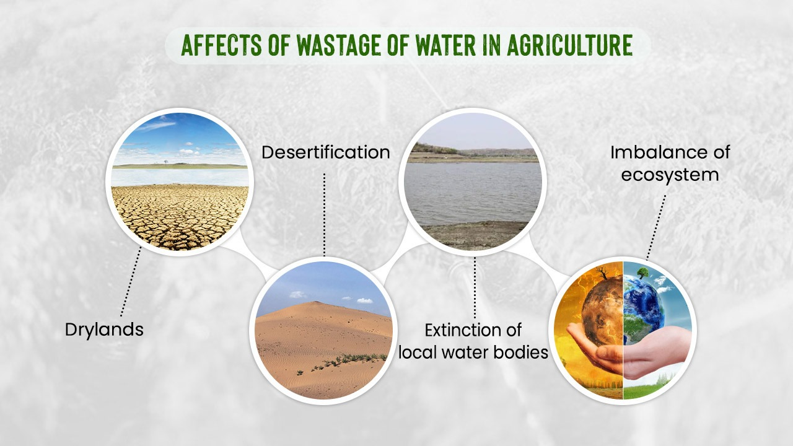

1. Present irrigation techniques: Use of faulty equipment, pipes and engines that sometimes releases more water that pipe's capacity, result in it's damage, follows by wastage of water.
2. Crop selection: Crops like rice result in lot of water requirement. We need to come out of this problem.
Inefficient Water Use: Certain crops require more water than others, and planting water-intensive crops in arid regions exacerbates water scarcity issues. Encouraging the adoption of drought-resistant crops and implementing water-efficient farming practices can mitigate wastage.
3. Less education of farmers, as result they don't understand it.
4. Low income of farmer and less awareness in them is also one of the issue. Because of less money and resources, they focuses much on money centric crops, they grow rice, result in more water requirement.
5. Over irrigation is also responsible.
Stop Water Wastage in the Agriculture Sector
Tips to Conserve Water in Agriculture
Implement modern irrigation techniques like drip irrigation and precision farming.
Use soil moisture sensors to determine when and how much to irrigate.
Choose drought-resistant crops suited to the local climate.
Optimize water distribution systems to reduce evaporation and runoff.
Practice rainwater harvesting for agricultural use.
Monitor and control water usage through smart farming technologies.
Adopting these practices in agriculture can significantly contribute to water conservation efforts and reduce water wastage in the agricultural sector.

Result of wastage:
The result of water wastage in agriculture is a significant loss of both water and crops. Irrigation systems can use up to 50% of the water used in agriculture, and leaks or inefficient systems can lead to wasted water. This not only wastes resources, but it also impacts the sustainability of agriculture and the environment. Improper irrigation practices can lead to soil degradation, salinity, and reduced crop yields. To reduce water wastage, farmers can implement efficient irrigation systems, use drought-resistant crops, and practice conservation techniques such as crop rotation and cover cropping.

Addressing water wastage in both sectors requires a multi-faced approach. Reasearch indicates a need of step towards it as soon as possible. However, challenges persist, and a lack of awareness, coupled with economic constraints, impedes widespread adoption. The effectiveness of policy measures is contingent on their enforcement and the support provided to communities and farmers. Integrated approaches are crucial for achieving sustainable water management.